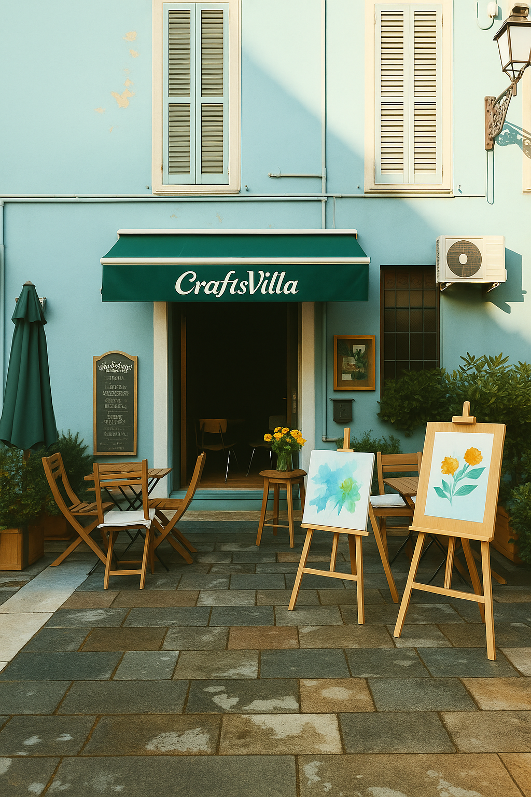
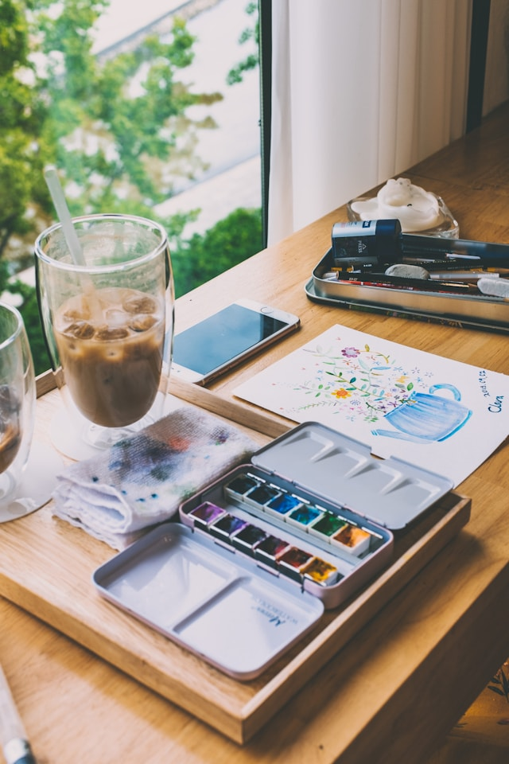
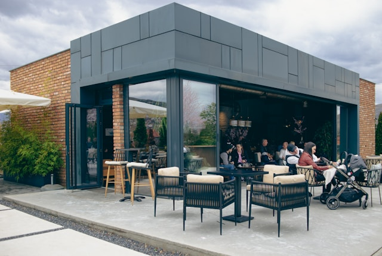
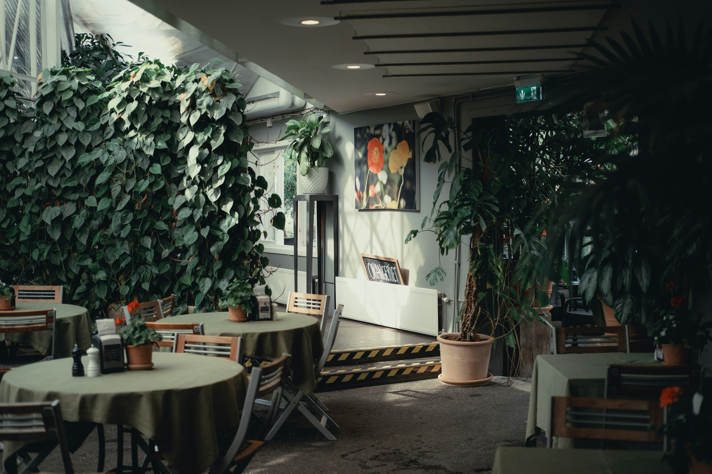

Velkommen til oss
CRAFTSVILLA tilbyr kreative workshops for alle aldre. Her kan familier, venner og kolleger møtes for å slappe av og lage kunst sammen. Vi tror på kraften i skaperglede og på viktigheten av å koble fra det digitale for å koble til det kreative.
Vårt studio i hjertet av byen er fylt med inspirasjon, varme og profesjonelle veiledere som hjelper deg å utforske dine kunstneriske sider. Enten du er nybegynner eller erfaren, vil du finne et trygt og inkluderende miljø hos oss.
CRAFTSVILLA er mer enn bare et hobbyverksted – det er et fellesskap. Vi arrangerer temakvelder, bursdager, firmaarrangementer og drop-in timer. Alle verksteder inkluderer nødvendig utstyr, og du får alltid ta med deg dine egne kunstverk hjem.
Cafè
I tillegg til våre kreative verksteder, kan du nyte en kopp kaffe eller te fra vår koselige kafé. Vi tilbyr et utvalg av drikkevarer og enkle småretter, perfekt for en pause mellom slagene eller for å lade opp kreativiteten. Enten du er deltaker eller bare følger noen som deltar, er du hjertelig velkommen til å slå deg ned og nyte stemningen i vårt inspirerende miljø.
På fine dager anbefaler vi å ta med deg kaffekoppen ut i vårt sjarmerende uteområde. Her finner du hyggelige sitteplasser, grønne omgivelser og et lite hjørne for utendørs maling og inspirasjon. Et perfekt sted å slappe av, hente inspirasjon eller bare nyte en rolig stund.
Uteområdet er også et sosialt samlingspunkt hvor du kan slå av en prat med andre besøkende, dele ideer og hente inspirasjon. Mange setter pris på muligheten til å gi og få tilbakemeldinger på prosjekter i en avslappet og vennlig atmosfære – ofte over en kopp kaffe under åpen himmel.

Agnes Mowinckels gate 6, 5006 Bergen
 
Tjenester
Mosaikk Kunst
400 kr
Inkluderer: Ramme, treplate, fargede steiner, gummi.
Akvarellmaling
200 kr
Inkluderer: Ramme, papir, akvarellfarger, pensler.
Lerretsmaling
300 kr
Inkluderer: Ramme, akrylpapir, akrylfarger, pensler.
Kontakt
Har du spørsmål, ønsker å booke en workshop, eller bare er nysgjerrig på hva vi tilbyr? Vi vil gjerne høre fra deg!
E-post: kontakt@craftsvilla.no
Telefon: +47 47236971
Adresse: Agnes Mowinckels gate 6, 5006 Bergen
Du er også hjertelig velkommen til å besøke vårt kreative studio i hjertet av byen. Her kan du få en omvisning, stille spørsmål, eller bare slå av en prat med en av våre hyggelige ansatte.
Våre åpningstider:
Mandag–Fredag: 10:00 – 18:00
Lørdag: 11:00 – 16:00
Søndag: Stengt
Følg oss gjerne på sosiale medier for inspirasjon og oppdateringer om
kommende workshops og arrangementer!
